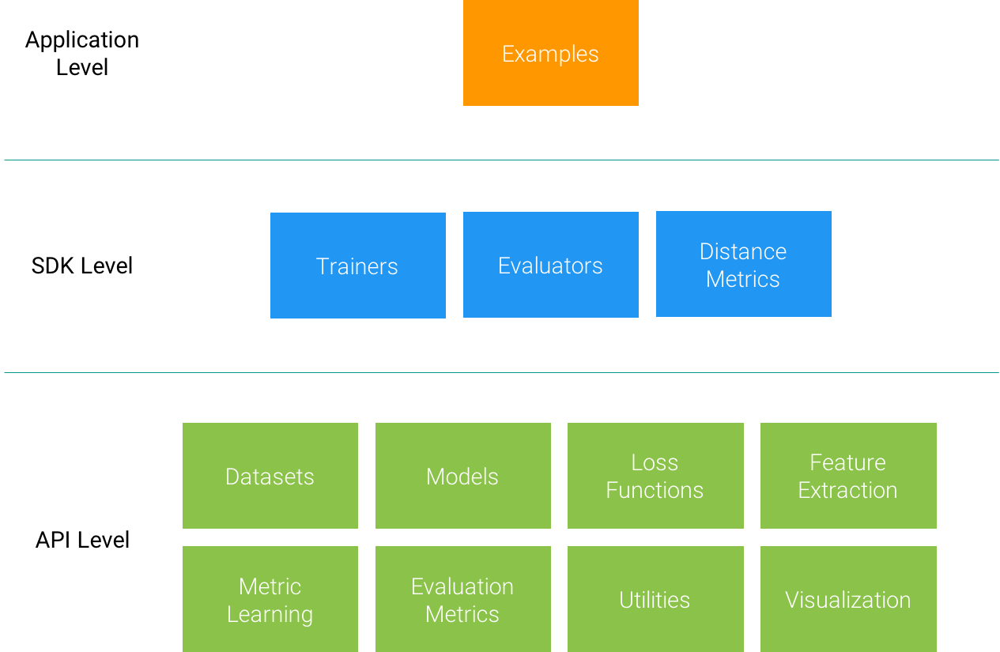

Overview of Open-ReID¶
Open Re-ID is a lightweight library of person re-identification for research purpose. It aims to provide a uniform interface for different datasets, a full set of models and evaluation metrics, as well as examples to reproduce (near) state-of-the-art results. Open-ReID is mainly based on PyTorch.
Structure¶
Open-ReID is structured into three levels, as shown in the figure below.

- API Level
- At bottom, there are decoupled modules each providing unit functions. For
example, the
datasetsmodule has a uniform interface for many popular datasets, while commonly used evaluation metrics, such as CMC and mean AP are implemented in theevaluation_metricsmodule, which accept bothtorch.Tensorandnumpy.ndarrayas inputs. - SDK Level
- In the middle, several classes interact with underlying APIs to provide
routines for standard tasks. For example, the
Trainercan be used to train a deep model on training set, andEvaluatorcan evaluate the model on validation and test sets. - Application Level
- At top, we provide several examples using Open-ReID. For example, one can easily train a CNN with different kinds of loss functions on different datasets, to achieve certain baselines or state-of-the-art results.